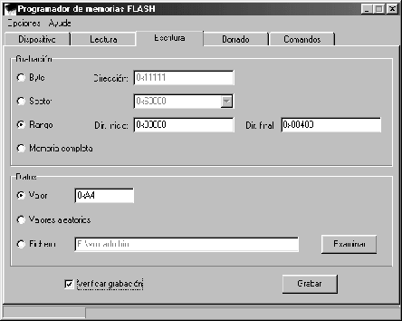

Subsections
Antes de grabar una memoria debe comprobar si se trata de una memoria
programable por páginas o byte a byte (puede obtener esta información
en la pestaña Dispositivo).
Las memorias programables byte a byte requieren que las direcciones
que van a grabarse estén borradas (es decir, tengan un valor 0xFF1). Remítase a la sección ![[*]](crossref.png) en caso de necesitar
borrarla. Tenga en cuenta que la unidad mínima que puede borrar es
un sector completo, por lo que si sólo desea modificar una posición
de memoria es posible que necesite leer el sector completo en el que
se encuentra, modificar el valor en la imagen obtenida, borrar el
sector y volver a grabarlo en la memoria.
en caso de necesitar
borrarla. Tenga en cuenta que la unidad mínima que puede borrar es
un sector completo, por lo que si sólo desea modificar una posición
de memoria es posible que necesite leer el sector completo en el que
se encuentra, modificar el valor en la imagen obtenida, borrar el
sector y volver a grabarlo en la memoria.
En las memorias por páginas, durante la grabación, se realiza automáticamente
un borrado de la/s página/s que contiene la dirección o direcciones
a grabar, por lo que no es necesario un borrado previo. Para evitar
la pérdida de datos del resto de la página al grabar un byte, nuestro
software realiza internamente una lectura de la página, la modifica
y la vuelve a grabar completamente, quedando por tanto las direcciones
no modificadas intactas.
Figure:
Ventana de grabación de memorias
|

|
Seleccione la opción Byte e introduzca en la casilla correspondiente
la dirección a grabar. Seguidamente introduzca en la casilla Valor
el dato a grabar. Si desea comprobar que la grabación se realiza correctamente
marque la casilla Verificar grabación. A continuación pulse
Grabar.
Seleccione la opción Sector y elija en la lista desplegable
la dirección de comienzo del sector a grabar. Tiene tres opciones:
- Rellenar el sector con un determinado valor. Marque para ello Valor
e introduzca el dato a grabar.
- Rellenar el sector con valores al azar. Marque Valores aleatorios.
- Guardar en el sector los datos contenidos en un fichero. Marque Fichero
e introduzca el nombre.
Si desea comprobar que la grabación se realiza correctamente marque
la casilla Verificar grabación. A continuación pulse Grabar.
Seleccione la opción Rango e introduzca la dirección inicial
y final del rango de direcciones que desea grabar. Tiene tres opciones:
- Rellenar el rango de direcciones con un determinado valor. Marque
para ello Valor e introduzca el dato a grabar.
- Rellenar el rango de direcciones con valores al azar. Marque Valores
aleatorios.
- Guardar en el rango de direcciones los datos contenidos en un fichero.
Marque Fichero e introduzca el nombre.
Si desea comprobar que la grabación se realiza correctamente marque
la casilla Verificar grabación. A continuación pulse Grabar.
Seleccione la opción Memoria. Tiene tres opciones:
- Rellenar la memoria con un determinado valor. Marque para ello Valor
e introduzca el dato a grabar.
- Rellenar la memoria con valores al azar. Marque Valores aleatorios.
- Guardar en la memoria los datos contenidos en un fichero. Marque Fichero
e introduzca el nombre.
Si desea comprobar que la grabación se realiza correctamente marque
la casilla Verificar grabación. A continuación pulse Grabar.
Luis M. Cruz - Octubre 2003